Fulcrum Online Walk Through
 Fulcrum is a mobile data collection platform for survey data. Fulcrum pulls surveys created via an online interface to smartphones or tablets for offline collection in the field. Survey managers push collected data back up to internet database, where Quality and Learning (Q&L) staff can analyze, correct and download survey data in near real time.
Fulcrum is a mobile data collection platform for survey data. Fulcrum pulls surveys created via an online interface to smartphones or tablets for offline collection in the field. Survey managers push collected data back up to internet database, where Quality and Learning (Q&L) staff can analyze, correct and download survey data in near real time.
Plan Ahead
Before creating the actual form, stop to think about how you want it to look. Are the survey questions ready? Are they arranged in a logical order? What type of values are you looking to collect? (Numeric, Text, Boolean, etc.) Are all questions required, or are some questions optional? Will any questions require guidance text to help instruct the collector? Who is the audience (collector and interviewee) of the form?
Starting a Form
Now that you have given these questions some thought it is time to create your form. In Fulcrum, “App” is the name used for forms. Go to FulcrumApp.com and click the 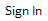 button. Use the login username and password given at the beginning of this document and click .
There are three ways you could start a form:
- Adapt an existing form
- Using a model from the library.
- Starting a new empty form
Existing forms might contain the same question types as your form. They don’t necessarily have the same subject or content, but they are organized in a way that fits what you are looking for. In the same way, they might have similar conditional logic. That means that the relation between questions, regarding visibility and requirement rules, is similar. These subjects will be covered later on in this guide.
If an existing form has a similar structure to the one you plan to create, you can copy it and make any necessary changes to adapt it to your needs. From your home page, you will see the existing forms created in this account.
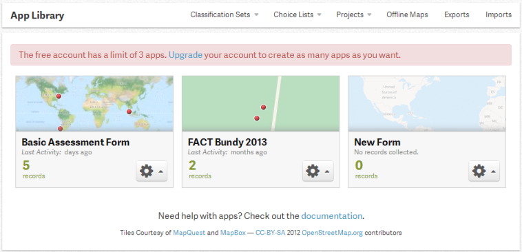
Each form will have a button; clicking the settings button on a form will give you the option of duplicating this form. To view the form before you duplicate it, select 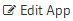. You are now redirected to the previously created form.
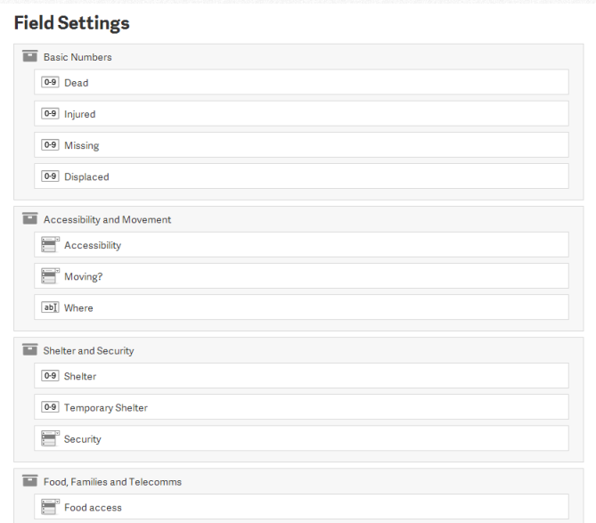
To view a question, click on the button but do not alter anything on this form. Click 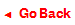 at the top of the page to return to the account homepage. Click the button again and select . A window pops up asking you to give a new name and description to the duplicated form. After populating the fields, click the 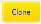 , you will be redirected to the new form with all the questions from the original form. It is now safe to edit, remove or add new fields to your form.
If none of the existing forms are similar to the form you will create, you can search through preexisting templates provided by Fulcrum which can edit, remove or add fields to.
From your home page, click . Two options will appear on your screen:
Use an app from the gallery
Design a brand new app
Choose the first option to be directed to the library where you can explore the existing forms. The second option will be covered in the next section.
Different categories are listed in the left bar with available forms and their descriptions listed in the right bar. Clicking the button allows you to view the entire form. If you find a form you want to use, click the button to select it. You will then be redirected to the editing page where you can adapt the model to your needs.
If none of the preexisting forms work you will need to create a form from scratch. From the home page, click and select “ Design a brand new app”. An empty form will open where you will manually create your form.
The Editing Interface
The form building interface is divided into three sections: Add Fields in the left bar, Field Settings in the central area, and App Settings in the right bar.
To add a question, click and drag the question type you wish to add (text, numeric, photo, date, etc.) from the “Add Fields” bar to the “Field Settings” area. A popup will appear; fill out all fields in the popup and select if you want the question to be hidden from the mobile. This feature is useful for questions that cannot be answered during the collection, but only later on with more information.
A form, for example, might collect the damage level of residential units after a disaster, as well as the ARC response to it. The help provided by ARC can only be computed after the survey in the field, when the families actually go to ARC. In this case, all the questions related to the following phase should be hidden on the mobile device. In that way, the collector will not be confused with a question he or she is unable to answer. The questions will be answered later on from the computer.
To change the order of the questions in the form, click on the question you wish to move, and “drag & drop” it where you would like it to be moved to. To delete a question, click the Delete Button at the right-side of each question’s bar. Note that this button will only appear once you pass your mouse over the question.
The “App Settings” bar on the left-hand side of the page refers to general information regarding the form. Fill out these fields to give the form a name and description. The “App Status” provides two options: active and inactive. An app should only be inactive if it’s no longer in use or if it’s still being created and adapted. When inactivated, users in mobile devices cannot access the form, so be careful.
“Record Title” will list the form’s questions in a drop-down list. The one you choose will be used to give the name for each record made. Let’s say you entered the ‘data collector’ as the “Record Title”. The answer for this question in each record will be the title for that same record.
Using the "Add Fields" Bar
Different questions require different types of answers. This is where the planning at the beginning of the manual comes into play. Different field types will provide different formats of answers. Not all field types are questions (i.e. section) use these to make the form clearer by organization and giving more information about the form and its questions.
- Label
- Section
- Text/Numeric
- Choice Fields
- Single Choice
- Multiple Choice
- Classification Field
- Date
- Photos
This field doesn’t refer to an actual question; Enables you to provide the user guidance or instructions he or she needs to follow. Use this to provide complicated question instructions to volunteers or demarcate important parts of your survey. It can contain any type of characters and it can be located anywhere within the form.
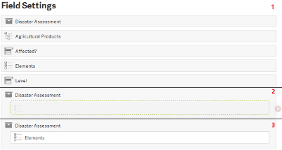
This field doesn’t refer to an actual question; Allows you to organize a series of thematically consistent questions into a group. After creating different sections, it is necessary to drag the relevant questions into the “Section” box to nest them under this section. The section box will appear while you click and drag the question to nest it.
Questions nested in a section can be displayed in two ways – inline and drill down. Inline means that this section will be displayed on the same page as the rest of the form when being filled out on a phone or tablet. The drill down option separates the section and its nested questions onto a different “page”. Usually, inline is used for shorter forms and drill down is used for longer, more complicated forms.
This data type allows free entry by the user. Text is appropriate for qualitative answers, while numeric is appropriate for quantitative answers. Avoid these types of questions when possible; open-ended data entry is much more susceptible to human error. Standardized answers are faster and more reliable.
These fields should be used when the interviewee is given predetermined answers to select from.
This type will be used when only a single answer is acceptable. In the first example below, the value is either accessible or not accessible- it cannot be both. In the same way, you could only choose one project when selecting which form you will be filling out.
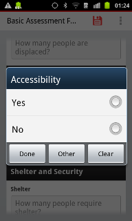 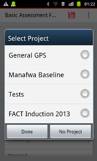This type will be used when multiple answers are acceptable. An example of this would be a question regarding which parts of a house were damaged during a disaster; more than one feature may apply (windows, roof, walls, doorway). Users may choose to only select one value but they have the option to select many.
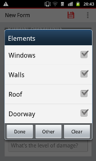This type works as a single choice, but allows categorizing a group of thematically consistent answers. This is often used with points of interest – land use / land cover, materials, utilities, etc. It’s much more efficient to have them organized by a common feature as shown in the image.
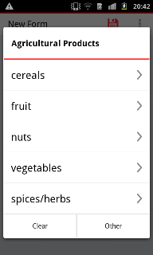With this type, it’s possible to use a calendar directly to select the appropriate answer for a question that requires date information without needing to type it manually. This ensures consistent data formatting.
This field allows a picture to be taken at the moment of collection and directly inserted to the form. The user will have the option of taking a picture at the moment or can import from their phone’s photo gallery. WARNING: Photos vastly enlarge the file size of a given survey. Only allow pictures if you have a strong enough internet connection at your syncing location to upload at least 1-2 megabytes per survey.
Defining Field Settings
Once you decide on which field type is appropriate for each question, you will need to fill out with some relevant information. For that, you will define the field settings. They are divided in default field settings, common to all the fields; and choice field settings, only applicable to the choice fields.
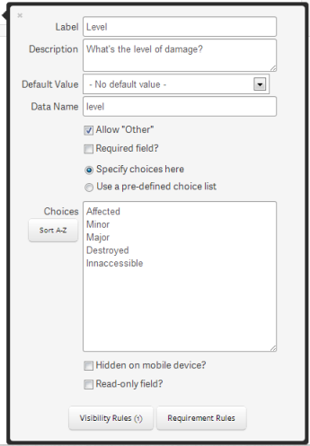- Default Field Settings
- Label
- Description
- Default Value
- Requirement and Visibility
- Choice Field Settings
- Choices
- Classification Set
- The "Other" Value
Insert a title for the question. This will be later used to create the column name for your database. Decide on something short and direct
Contains the actual question and should be more descriptive than the label. The question text will disappear once a user answers (so a paper copy of the survey is helpful for memory’s sake).
The default value is an optional default answer to a given question. Users can s change the answer otherwise it will stay the same. Default values can seriously compromise the integrity of your data if inappropriately used, as volunteers may fail to change them – use with extreme caution.
Questions that are essential for the survey need to be marked as required, by selecting within the settings. The use will be unable to continue the survey unless this question is completed. It’s important to remember that some questions are not vital, as they contain extra information, so this feature should not necessarily be used for every question.
Some questions might be relevant after a certain answer is given. In these cases it is possible to set rules to define if the question will be required or even visible to the user. For both situations, the system will recognize the answers given previously to decide on applying visibility and/or requirement.
Visibility: some questions will only make sense in some cases and otherwise should not appear at all in the form. That’s when a visibility rule should be applied.
Scenario 1 – A volunteer is surveying the destruction level in a set of residences. If the user finds a house non-affected, there’s no need to have a number of question referring to the level of damage. Hence, these questions should only appear if the user checks “yes” for “Affected?”.
Note that when you apply a visibility rule to a required field, it will only be really required if visible.
Requirement: some questions might only be required in some cases and otherwise should still appear, but be considered only optional. That’s when a requirement rule should be applied.
Scenario 2 – A user is collecting the location of plants in an area known for having poisonous plants. One of the questions is “Poison?”, and the next is “Plant Species”. While the species is valuable information for any plant, it might be only essential for the poisonous plants. Therefore, the requirement will only be active when the user selects “Yes” for the “Poison?” question
Each case will have a different set of rules, so before applying them, take a look at your pre-planning and the questions already added to the form to understand what the proper settings should be. Which questions will require visibility or requirement rules? Which questions will require different follow up questions depending on the interviewee’s answers (conditional logic)? What other questions depend on this logic?
The structure to apply rules for both visibility and requirement is the same. You will define situations when the visibility or requirement should be applied. A situation explains (i) which question you will be working with and (ii) which answers will determine an action.
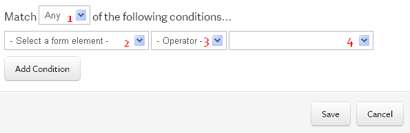1 – Select between “Any” or “All”
Sometimes you might have more than one situation for setting a rule. In this case, you can decide if it will be applied when all the situations are true at the same time (All), or if only one of them needs to be true to apply the rule (Any).
2 – Select which question you will be dealing with.
Looking back to the Scenario 1, that’s where you should input the question “Affected?".
3 – Operators
After defining the question, the operators give different relations to the answer. You can simply say which answer you want it to be by selecting “Equal to”. If you want the rule to be applied only when an answer is not being chosen select “Not Equal to”. You can also set rules for when a question is unanswered by selecting the “Is Empty” operator; as well as if the question is answered – no matter which answer it’s – by selecting the “Is Not Empty” operator.
4 – Select the answer for the question
This field is only available if you choose the operator “Equal to” or “Not Equal To”. You have to specify which answer the question has to have – in the “Equal To” case; or which answer the question can’t have – in the “Not Equal To” case.
If you want to add more conditions, click “Add conditions”. A new button 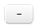 will appear at the right of each statement allowing it to be deleted. Note that this button is not available when there’s only one situation. If you’ve started adding rules and you decided you no longer would like them to apply, delete the situations you can using the button, and when only one is available, simply change the options to the default in image above: no rules will be set in that way. To confirm a rule was applied to your question, check the bottom of the field settings. A parenthesis containing the number of rules will appear when rules are being used.
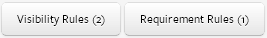This setting needs to be completed when you’re filling a “Single Choice” or “Multiple Choice” field.
When selecting values it’s important to understand the difference between labels and values. Many times, databases use unique codes as values, instead of the actual description of the feature. However, even though it would be good to have the codes in our form the user collecting data may not understand the code. Fulcrum enables the form builder to add a value as well as a unique-code that the users will understand. The description is called “Label” and the code is called “Value”. If a value is not set, the system will repeat the label as the value.
To input values, you will have the option of (i) manually entering the values (ii) to use an existing “choice list”.
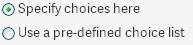To create manually, select “Specify choices here”. Each value should be entered on a different line. If you want to attach unique codes to each values (as mentioned before): in each line, first list the description, then add a semicolon, and then input the unique code value. The image below shows an example of a manual list we created.
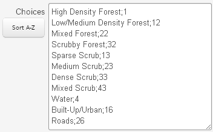In a single line, everything before the semicolon is going to be considered a description and will be displayed to the user. Everything after the semicolon will be considered a uniquely coded value and will populate the database. Be careful when listed descriptions are phrases; if the phrase coincidently has a semicolon, everything after it will be considered a uniquely-coded value and it won’t be displayed to the user.
However, it’s faster and more reliable to use choice lists, especially when they can be used in different situations (i.e: “Yes/No”, “Poor/Fair/Good”, “US States”). Phrasing your questions to be answered by generic choice lists such as Yes/No or Poor/Fair/Good is faster to answer and cut down on confusion that may be caused by custom value lists.
In the Fulcrum homepage (when logged in), you will see the following header:
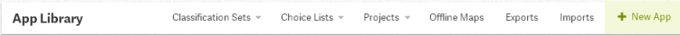
The “Choice Lists” option allows you to create a new list “New Choice List”, import one “Import Choice List” or to manage the existing lists.
New Choice List has a similar layout as the form builder interface. Drag items from the left-hand panel to the central area, each item you drag will be a new item for your list. Fill out the left field with the label for your item (the description), and the right field with the uniquely coded value for this item. If you don’t want to use unique values, simply leave it blank.
You can also build your list using software like Microsoft Excel and then import to Fulcrum. This is a useful feature for long lists that are already available to you in a database. To import, your table will need to follow the default Fulcrum format with the first column containing the labels and the second column containing the values.
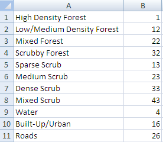
Save the document as a .CSV when it is formatted and ready to use in your form. Go to the Fulcrum homepage and select
“Import Choice List” on the Choice Lists drop down menu. Provide a name and description as needed. Go to “Choose File...” to navigate to the folder where you saved your list. After selecting it, click in “Create Choice List”. You will be redirected to a Fulcrum version of the list where you can check to make sure your list imported correctly. You can then save your list.
To use an existing list in a form, go to the field settings of the question where you want to use the “choice list” and select “Use a pre-defined choice list”. A drop down menu will appear and you can select the list you previously made. The items will be directly imported as answers to your question.
The classification set is treated differently, but is very similar to a choice list. The main difference is that you can set up hierarchies where you nest thematically consistent sub-items under the main categories. The land use land cover classification was earlier treated as a choice list only for education purposes, but it should actually be done as a classification set.
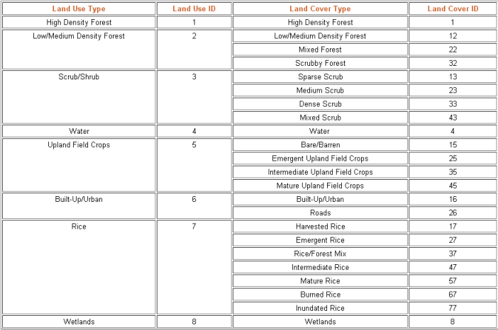
As you can see, land cover types are grouped in a single land use category– which is exactly what defines a classification set. Using this example, we will create a classification set using the same methods covered with choice lists, with a few minor differences.
In the same header from the homepage, the “Classification Sets” option allows you to create a new classification set “New Classification Set”, import one “Import Classification Set” or to manage the existing classification sets.
Select “New Classification Set” (you will find a very similar structure as the one you have seen with the lists). Fill the fields in the same way with the labels in the left-hand column and values in the right-hand column. The only difference is that you will have to group similar items in a category. For that, drag the items and nest them to the desired category.
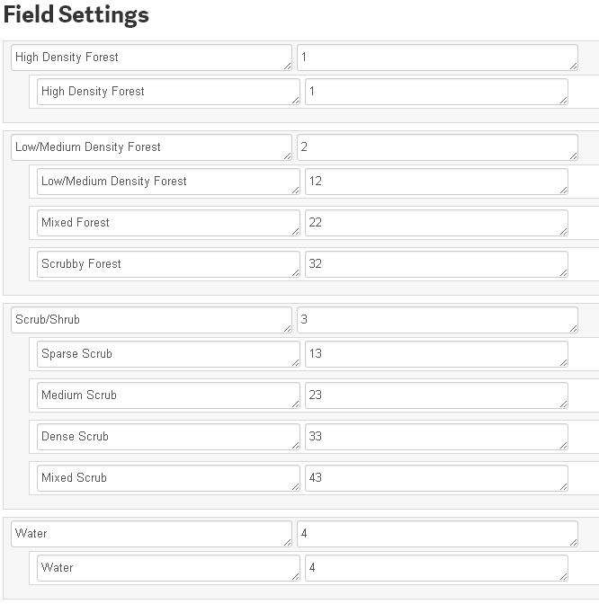
You can also do this by importing a .CSV file, just like the choice lists. The only difference in this case is the formatting the .CSV file should have. Each main category should be in the first column. The first sub-type should be in a different line and in the second column.
A sub-sub-type should be in a different line, and in the third column and so on with deeper categories. See example below:
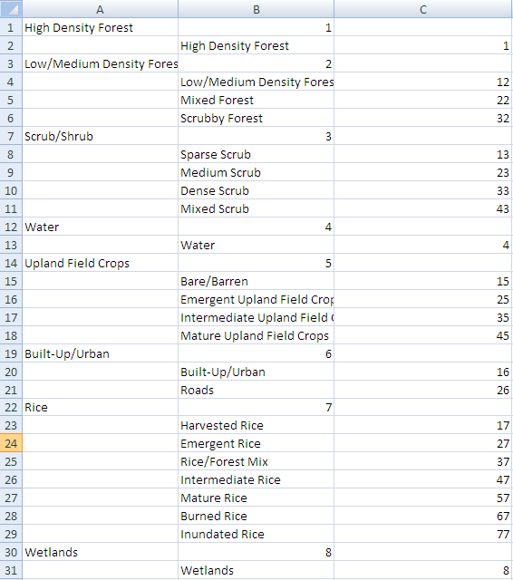
Once you have created the classification set, you can use it in your forms. Different from choice lists, you can’t create a classification set manually in the field settings. Instead, you will have a drop-down list in the “Classification” field where you can choose classification sets you have previously imported.
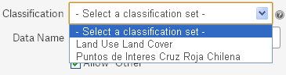
“Other” allows for free form data entry. Results will invariably be qualitative, so only allow “Other” answers if you’re comfortable with qualitative responses that can’t be statistically analyzed by M&E staff.
Double-check, Save and Exit
Run a test as a mobile user and check for adaptations and corrections; make sure all visibility, required, and conditional logic are programmed and working correctly.
Export your test response and make sure the data appears as you want it in your spreadsheet.
Background Maps
When volunteers go to the field, Fulcrum Mobile App provides a background map from Google when internet is available. This is an extremely valuable reference for the user, but internet is commonly not available during survey situations.
Luckily, Fulcrum allows the use of offline maps to be used as a background (as long as the map is in the MBTiles format) Two main programs are used to create offline maps: Mobile Atlas Creator, which simply exports the image from a provider, such as Open Street Map; or Tile Mill, where personalized features can be added to the background image. This guide will outline the use of the Mobile Atlas Creator to produce a basic background map.
.- Creating a Map
- Uploading a MBTile to Fulcrum
Mobile Atlas Creator is a Java Application, so before you start anything, you need to make sure your computer has Java installed. If it doesn’t, download and install on their website. You can then download Mobile Atlas Creator here. Extract the content in a folder on your computer and open the file Mobile Atlas Creator.exe. You don’t need to install anything. When initializing, a window will appear asking you to give the new atlas a title and to choose the format. Make sure to select “MBTiles SQLite” for the format.
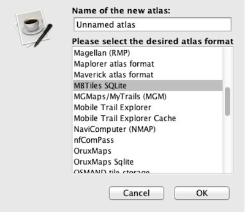
After clicking “Ok”, the Mobile Atlas Creator interface will appear. You can move the map by pressing the CTRL key in your keyboard, and then clicking and drag. If you don’t press the CTRL key before clicking and dragging, you will actually select an area to be exported, so be careful.
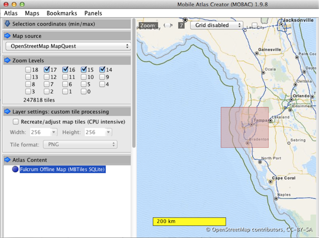
Once you find the area where the survey is going to be done, you can then click and drag to select your boundary (without holding the CTRL key). Be aware that selecting a large area dramatically increases the size of the file you will import to Fulcrum and that there are storage limitations (both for the website and on the mobile devices), so it’s important to select only the necessary area.
After selecting the area, you can give it a name in the “Layer Name” and “Add Selection” to your project. This will populate the first section of the left bar: “Selection Coordinates (min/max)”. The next section is “Map Source”, where you can choose the provider for the background map. It’s common to use the OpenStreetMap MapQuest, but you can navigate to the other options and check how well they represent the area you are working with.
In the “Zoom Level” section, extra care is needed as the choices made at this point can change the size of the file. The zoom ranges from 0 (totally zoom-out) to 18 (totally zoom-in). If you have chosen a small area previously, like a city or a community, it won’t be a problem to use a more detailed zoom like 15-18. However, if you chose a large area, like an entire district or state, it might be wise to keep lower zoom levels. You can check how much detail each zoom level has by exploring the map and looking at the upper bar, where it says the zoom number. When you select the appropriate zoom levels for your offline map, you can click the button “Create Atlas”. You will be able to see the progress in the window that pops up, be patient as this process might take a while.
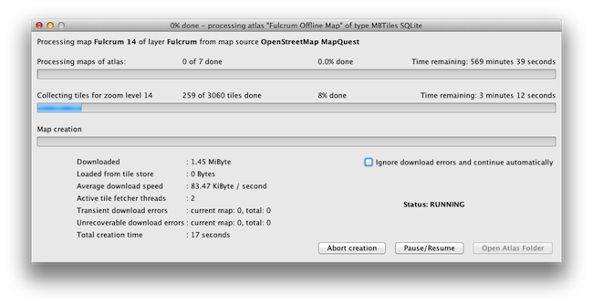
Once you have the MBTile file in your computer, go back to the Fulcrum Homepage and click “Offline Maps”. At the top bar, you will see a button saying , click to import the file you have just created. On the next page you should select the map file after clicking the button. Once selected, the file name and size will appear, as well as the  button. If the file is correct, click this button and wait for the process to complete.
button. If the file is correct, click this button and wait for the process to complete.
You will be redirected to a page where you should name the file and give it a short description. Use the description field to give an idea of the zoom level chosen and the area being covered. At the bottom, you will see a bar showing the “Current Data Usage”. That allows you to see if there is still space to include the map you just made. At this point, if you think you map is too large for the storage available, you can hit “Cancel” and start over. Otherwise, click “Add Map” to put the map in your library. Note that the bar is showing the Data Usage without your map, and it will update once you actually add it to the library.
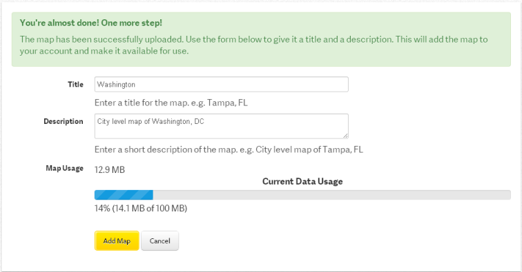
Now the background map is available on Fulcrum, but still needs to be loaded to the phones before going to the field. On the Android devices, open the Fulcrum Application and go to the main menu. The “Map View Options” will direct you to a page where you can check the “Layers” (offline maps) and the “Basemap” (online maps). Your map should appear with the sign, showing that it wasn’t downloaded yet. Simply click it, and a message will pop-up asking if you want to download the layer now. Hit “Download Layer” and wait for the download to complete. You can check the progress at the bar below the layer name.
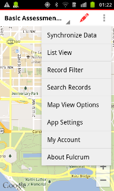 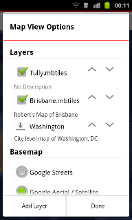 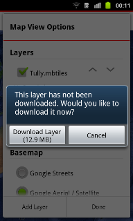 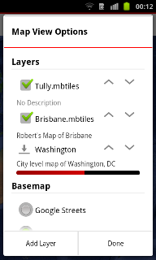
If your map doesn’t appear in this screen, it might be because the application is not currently synchronized with the internet. If this is the case, go back to the main menu, and select “Synchronize Data”. Wait for the synchronization to be finished and you will be able to see your map in the Map View Options page.
Managing Your Data
Once your form is ready and the users are collecting information, you can still make edits to your form but keep in mind changes might compromise the information already collected. While changes will simply update the form, deleting questions will also delete any answers given to that question in previous surveys. Be extra cautious when editing your deployed form.
Managing your database will allow you to see the progress of a survey and review forms that have already been submitted. If you do need to delete a question but you don’t want to lose the information, you will be able to export the data, so previously collected forms will be saved - even if the question is deleted.
Navigating through the existing records
From the home page, you will see all the forms created. Click on the one you want to manage. You will be automatically directed to a map view of the records for this form. In this view, you can click the points in the map to see the entire record with all the answers. At the top bar, you will have the option to edit the answers, print a report with all the information from the record, delete the entire record or close the window.
You can view the same information in a table format. At the top of the page, you will see the bar . The first button changes the view to only see the map. The second button divides the screen in two, half with the map view, and half with the table view. With the third button selected you will see only the table format.
The table view has the same functionality as in the map view. Clicking the plus button allows you to edit, delete or print the record. You can open the record to see it entirely by clicking open in that menu or by simply double-clicking the line in the table.
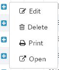
You can also include a new record when data collection was made without the use of a mobile device for any reason (i.e: dead batteries, technical problems etc). For that, still in the map or table view, click the green plus button at the top of the page. For the location of the record, select the place in the map where the information was collected. Make sure to zoom-in as much as you can to provide a more accurate location. Then, simply answer the form as if it was in the mobile device and hit save when you are done.
Exporting your data
As mentioned before, sometimes a form needs to be changed, which includes removing some questions. However, information would be lost with that, so it’s necessary to save the data outside the Fulcrum website. In the same way, data analysis can be much more productive in more advanced analysis software. In these situations, exporting your data will be very useful.
There are two ways to access Fulcrum’s Export Wizard:
1 – Go to the settings of the form you want to export and click 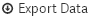 .
2 – From the top bar, select Exports. From there, click .
Both ways will direct you to the same page, where you will be able to select the records you want to export and which forms they are from. You will also be able to decide in which format to export the data to.
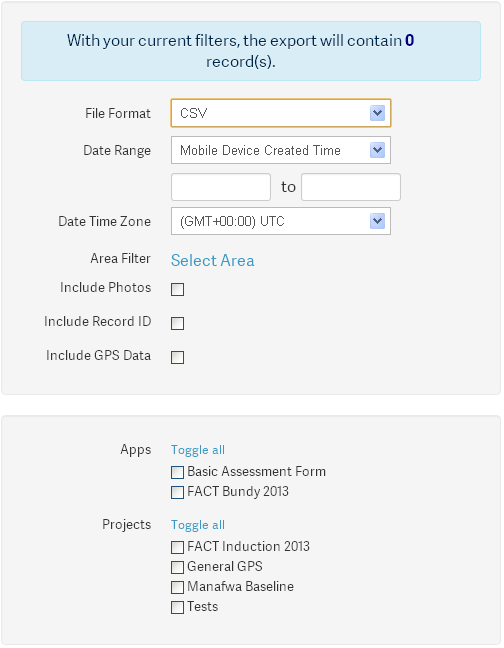
Firstly, select the File Format you will want to have the information in. There are four types available: CSV which is commonly used on Excel, ESRI Shapefile which stores also the location of each record and can be used directly on GIS software, GeoJSON is a web language used to create interactive web maps, and KML the common format used to visualize data in Google Earth or Google Maps.
In the Date Range section, you can filter the records from a certain period of time, if necessary. Remember that by using this feature, not all the data will necessarily be exported. Leave it blank if you want all the records that have been collected.
In the Area Filter, you have similar capabilities, where you will be directed to the map view and able to select an area to be exported. Only the records that fall inside that area will be exported if using this feature, so be careful. If you accidently selected an area and want to delete it, click “Select Area” again, and in the map view, click “Remove Selection”. That will allow exporting all the data, regardless of its location.
You also have the option of exporting photos, record ID and GPS data. Select them as needed.
In the second box, you will select which forms you want the records to be exported from. If you open the Export Wizard directly from the actual form, it will be already selected. Otherwise, select the relevant forms. You can also filter the records you want to export by the project they are part of. Remember that for that to work all the records from a project should have been tagged as part of the project.
Clicking next will bring you to the next page of the export process.
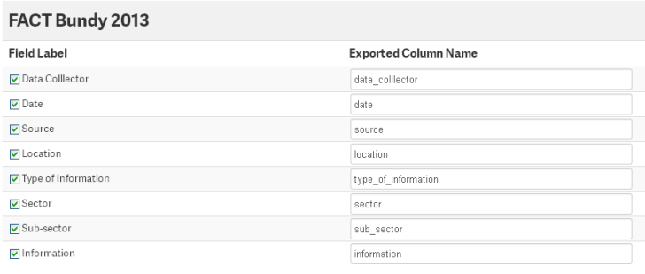
The second page consists of defining the column names you want for your exported file. As a default, the system will remove any capitalization and insert an underline instead of spaces. The default usually works well and you don’t need to change anything at this point; but you do have this option if necessary.
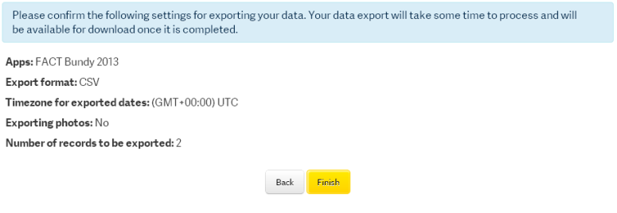
On the third page confirm the information that you have selected and finish the process. You will be directed back to the “Exports” page, where the file will be available. Click the button to download the exported file. Later, if you lose the file, you still can download from this page.
APPENDIX I - Defining Field Types from Form
To exemplify all the content learned, we will use a traditional form from Illinois Emergency Management Agency, regarding the Disaster Impact Assessment for a given disaster:
Following, you will find the appropriate settings for the first three main sections of this form.
“Detailed form instructions can be found at…”: Label Field Type
Date compiled: Date Field Type
A. General Information: Section Field Type
1. County: Single Choice Field Type
City/Town/Township: Single Choice Field Type with Visibility Rules or Text Field Type
2. Points of Contact: Section
Name: Text Field Type
Phone: Numeric Field Type
E-mail Address: Text Field Type
3. Type of Incident: Single Choice Field Type
4. Incident Start Date: Date Field Type
Incident End Date: Date Field Type (Not Required)
Incident Ongoing?: Single Choice Field Type
5. General Description of the geographical areas impacted and damages: Text Field Type
B. Deaths/Serious Injuries: Section Field Type
1. Are there any deaths associated with this incident? : Single Choice Field Type
Description: Text with Visibility Rules
2. Are there any serious injuries associated with this incident: Single Choice Field Type
Description: Text with Visibility Rules
C. Voluntary Agency Activity: Section Field Type
1. How many shelters were opened?: Numeric Field Type
“Provide the following information..”: Label Field Type
Shelter #1: Section Field Type
Shelter Location: Address Field Type
Name: Text Field Type
Shelter Operation Start Date: Date Field Type
Shelter Operation End Date: Date Field Type (Not Required)
Still Open? : Single Choice Field Type
Peak overnight population: Numeric Field Type
Total population of all overnight stays: Numeric Field Type
2. Describe any pet shelter activity: Text Field Type
3. Other Activities: Section Field Type
Indicate number of: Label Field Type
Mental health contacts by voluntary agencies: Numeric Field Type
Clean-up kits distributed: Numeric Field Type
Meals served: Numeric Field Type
Feeding Sites: Numeric Field Type
American Red Cross (ARC) cases: Numeric Field Type
4. ARC Operation Level: Single Choice Field Type
5. Other Assistance: Text Field Type